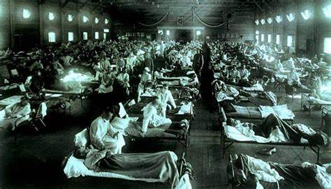

La viruela figura entre las enfermedades más devastadoras que jamás hayan existido en la historia
de la humanidad. Alteró dramáticamente el curso de la historia, incluso contribuyendo al declive
de civilizaciones enteras. Se declaró erradicada en 1979 después de un programa de vacunación que
está considerado como una de las victorias más importantes de la medicina moderna.
La viruela es una enfermedad aguda y contagiosa causada por el virus “variola”. Recibe su nombre del
término en Latín que significa “moteado”, haciendo referencia a los bultos y pústulas que aparecen en
el rostro y cuerpo de los afectados. Históricamente el virus ha matado al 30% de las personas que lo
han contraído. Los que han sobrevivido a menudo quedaban ciegos, estériles, y con profundas cicatrices,
o marcas de viruela, en la piel.
Se transfería por contacto directo con los infectados o a través de fluidos corporales, también a través
de objetos contaminados como las camas, y la enfermedad tenía dos variantes. La Viruelamayor, que era la
más común y la más severa y letal. Y la Viruelamenor, que causaba una enfermedad menos agresiva, que era
mortal en menos del 1 por ciento de los casos. Las otras formas, menos habituales, eran: la hemorrágica y
la maligna. Ambas causaban irremisiblemente la muerte.
Se cree que la Viruela se originó en la India o en Egipto hace 3.000 años. Las pruebas más tempranas de la
enfermedad datan del Faraón Egipcio Ramsés V, quien murió en 1157 a.C. Sus restos momificados muestran marcas
de viruela en su piel.
La enfermedad se extendió luego hacia las rutas del comercio en Asia, África y Europa, llegando finalmente
a las Américas en el siglo XVI. Los indígenas no tenían ninguna inmunidad natural. Y se estima que un 90 por
ciento de las muertes indígenas durante la colonización Europea fue a causa de enfermedades y no por la
conquista militar. La Viruelacontribuyó al declive del Imperio Azteca, en lo que ahora es Méjico, después de la llegada del
virus con los conquistadores Españoles en el 1519. Más de tres millones de Aztecas sucumbieron a la enfermedad.
Gravemente debilitados, los Aztecas fueron vencidos fácilmente. La viruela también causó la muerte de un
Emperador Inca y eliminó gran parte de la población Inca del Oeste de Sudamérica.
Durante los últimos meses de la Primera Guerra Mundial, una virulenta cepa del virus de la gripe se extendió
rápidamente por todo el planeta infectando a un tercio de la población mundial y causando la muerte de decenas
de millones de personas. La pandemia de 1918 y 1919, también conocida como la gripe española, se extendió a gran
velocidad por todo el mundo y en sólo 18 meses infectó a un tercio de la población mundial. La férrea censura de
los países implicados en la Gran Guerra escondió su gravedad, pero los estudios actuales elevan el número de muertes
de 20 hasta 50 o incluso 100 millones. Si el más elevado de esos cálculos es correcto, entonces la pandemia habría
matado a más personas que las dos guerras mundiales juntas.
Ningún rincón del planeta se mantuvo a salvo del virus. En verano de 1997, el científico Johan Hultin viajó hasta
Brevig Mission, una localidad de Alaska de unos 200 habitantes, en busca de cadáveres enterrados. Con el permiso de
las autoridades locales, exhumó del suelo congelado el cuerpo de una mujer en perfecto estado de conservación, extrajo
una muestra de su pulmón y volvió a sepultarlo. Pretendía secuenciar el genoma del virus que 80 años antes había matado
a esa mujer junto al 90 por ciento de la población local. Brevig Mission fue un escenario más de una de las peores tragedias
que ha vivido la humanidad, pero la férrea censura de los países implicados en la primera guerra mundial escondió su gravedad.
La gripe la causan varios virus muy parecidos entre sí, pero sólo una cepa (el tipo A) está relacionada con las epidemias
mortales. A pesar de conocerse como gripe española, los primeros casos se registraron en Estados Unidos durante el último
año de la Primera Guerra Mundial. En marzo de 1918, el país llevaba once meses en guerra contra Alemania y las potencias
centrales, y su exiguo ejército se había convertido en un enorme contingente que acabaría sumando más de dos millones de
efectivos enviados a Europa. Los primeros casos se dieron en uno de los muchos centros de instrucción que se pusieron en
marcha en un país que se movilizaba para la guerra.